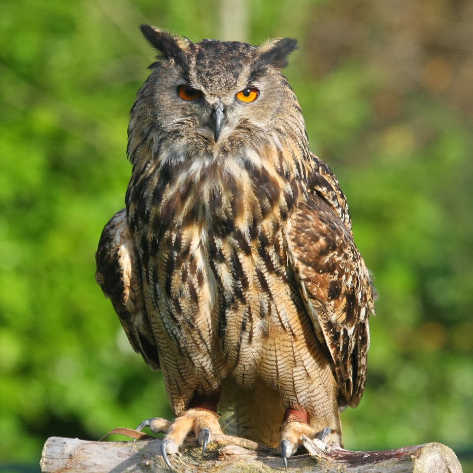

BUO

< El búho cornudo es una especie depredadora, considerada como un elemento importante en la estructura y función de los ecosistemas donde habita, y reguladora de especies de pequeños o medianos.El búho cornudo tiene un disco facial de café a anaranjado con un borde blanquecino alrededor de los ojos y una corona obscura. Presenta plumas grandes a manera de cuernos u orejas, los ojos amarillos, el pico grisáceo y un plumaje blanco alrededor de la garganta. En las partes bajas del cuerpo su plumaje es de color gris o café-grisáceo con blanco-amarillento y barrado de negro o café. Las alas son largas, las plumas del vuelo y de la cola son barradas de coloración obscura. Los tarsos y los dedos están completamente emplumados y en ocasiones tienen barras obscuras.
pagina principal